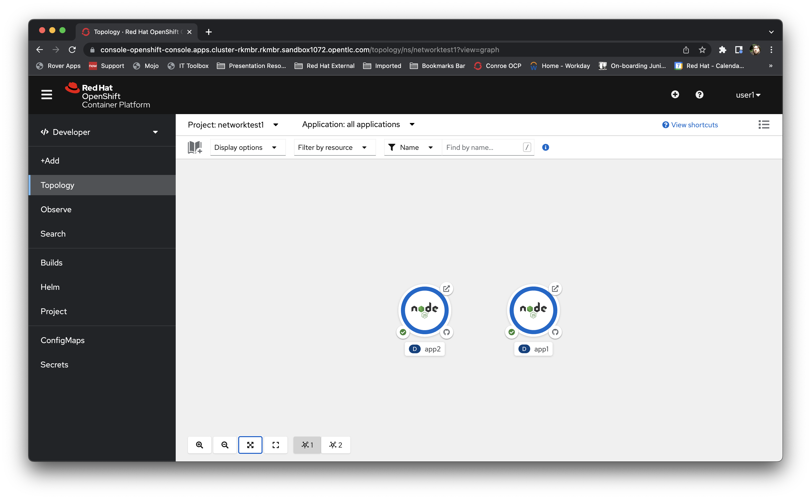

Student Bootcamp - OpenShift Networking Exercises
Welcome to the Red Hat Student Bootcamp OpenShift networking exercises. This page will guide you through creating some applications and examining the networking available between them from a developer viewpoint; this session should take about an hour,
but the cluster will remain up and active for the rest of the day if you run out of time.
For this exercise please use the Cluster URL provided, along with the username (format userX where X is a number) and the password openshift
Logging on to the system
Go the URL provided for the Cluster.
Your username will be "userX" where X is a number. Your password is openshift.
Once you have logged you you will be presented with the developer's perspective; if you have previously logged in and gone to the administrator's perspective switch to the developer's perspective using the pulldown at the top left of the user interface.
Creating a Project/Namespace
Click on the pulldown at the top left of the page (Project: All Projects). Select Create Project
IMPORTANT - for the name of your project use "networktestX" where X is the number of your user. Do not use X. Click on Create
You will now see a topology page similar to this:
Creating the test applications
Click on 'Add+'
Click on 'All Services' in the Developer Catalog
Click on 'Type/Builder Images'.
Click on the "Node.js" Builder Image tile.
Click on the "Create Application" button.
Scroll down to the "Git Repo URL" entry point. Click on the "Try sample" link beneath to populate the field.
Scroll down and type "app1" in the "Name" field (Important - use the Name field and not the Application Name field).
Click the "Create" button.
While the application is building click on "Add+" again. We will be adding a second application in the project.
Again, choose 'All Services' in the Developer Catalog.
Again, click on 'Type/Builder Images'.
Again, click on the "Node.js" tile.
Again, click on the "Create Application" button.
Use the 'Try sample' link to fill the git repo URL again.
This time set the "Name" field (not the Application Name) to "app2". Then click the "Create" button again.
Wait for the second application to build and be deployed. This will be complete when both the icons displayed switch to Dark Blue borders.

Experimenting with SDN networking
Now we are going to communicate between the two Pods using the SDN and the Services described in the course. To do this we are going to go into the applications themselves using the User Interface.
First click on the 'app1' icon in the topology. A panel will appear on the right-hand side showing the details of this deployment; there will be a section called Pods; this shows the actual Pods that are running your application. Click on the Pod itself (it will have a name that starts with "app1-".
You should now see a screen with an overview of the Pod itself.
Now click on the 'Terminal' tab; this will create a terminal into the running Pod from which we will do some networking tests.
We are going to use the curl command to pull traffic from the target services. This command takes a URL and connects to the target, and then pulls the webpage back. First try this:
If this works you will see a chunk of HTML. This is the response from the application you are in; by using the url "http://app1:8080" you have gone straight to the Service point of the application.
Now try:
You should see some HTML again. This time you have connected to the other application across the SDN using the "app2" service.
This shorthand gives you the ability to communicate between applications in the same Project using the Service name directly; the advantage of this is that you are not going outside of the SDN and can shortcut the addressing using the name of the service.
Also be aware that if you have multiple copies of your application, by scaling up, the Service remains singular; you could have one Pod for your application or a hundred, and still access it directly using the shorthand Service name.
Now try:
Remember to change the number as stated to your Projects number.
You should see a chunk of HTML. What we have done here is to expand the name to include the Project. We have to add the ".svc.cluster.local" as it is a fully qualified domain name that is Cluster wide. This means you can access, if you are allowed, Services directly by name in other Projects.
Additional Extra Exercises
If you want some fun, try and do the following:
1 Create a second Project called "anothernetworktestX", replacing X with your number
2 Add an application called app3 in this new project
3 Go into the Terminal for the new application and see if you can work out how to directly call the app1 application in your first project
4 ADVANCED Using the Administrator view go to the Networking tab and see if you can add a Network Policy to stop Services in your second project from calling Services in your first project. This will require you to read up on Network Policies; try using docs.openshift.com to see how